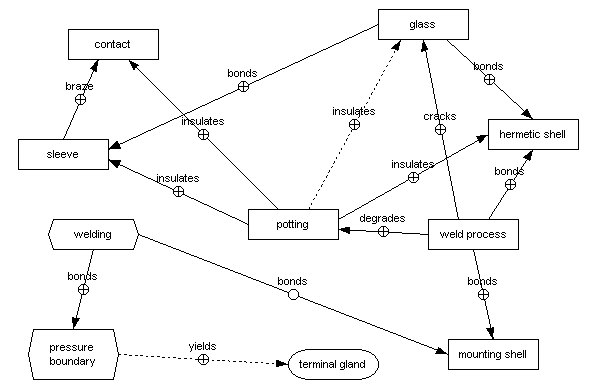
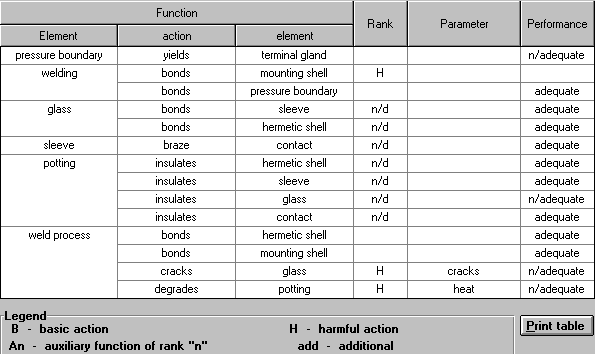
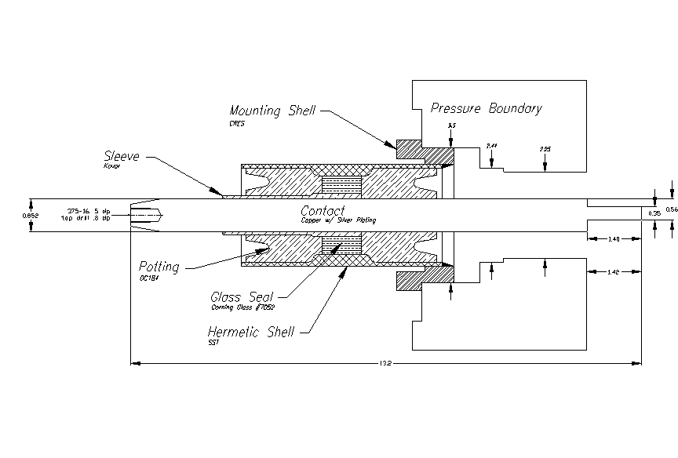
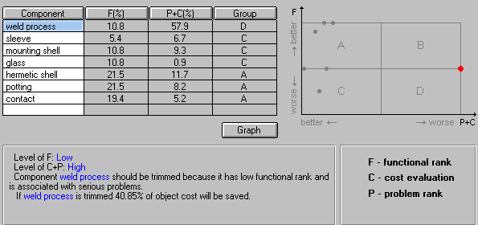
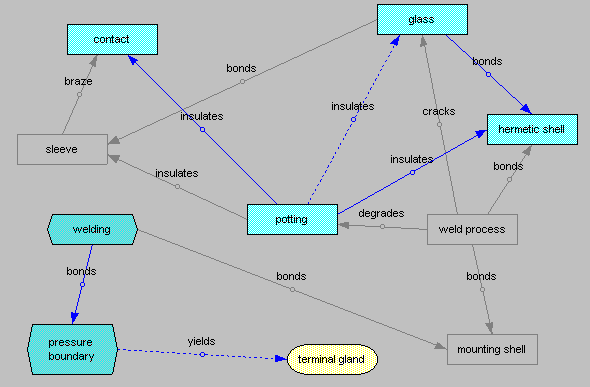
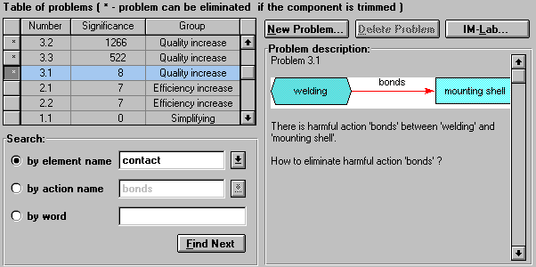
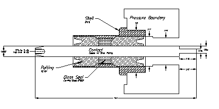

Prepared by:
Dr. Michael S. Slocum, P.E.
Senior Staff Engineer
International Space Station
Special Products
September 1997
I. Abstract
New requirements for reactor penetrators has reflected increased performance and reliability conditions. The evolution of military technology in this arena is non-linear and dictates technology responses from world class manufacturers to be non-linear as well. Advanced methodologies must be employed in the research, development, and design phases to assure compliance with the voice of the customer.
A terminal gland was proposed using existing design methodologies that theoretically would meet the requirements specified by the customer. Finite element analysis confirmed acceptability but indicated unacceptable reliability limits. Therefore, innovation was sought to increase reliability as well as decrease cost, complexity, and the potential for catastrophic failure.
The Theory of Invention and Innovative Problem Solving (TRIZ) was employed to functionally model the existing system and mitigate design failure modes and effects. An Altschuler matrix was employed to innovate problem resolution and predict technology evolution in the selection of systemic improvements with favorable results. Dynamic system response was improved 12dB and performance levels were increased an average of 30%. Cost was reduced 63 %, and the number of components was reduced 42 % (which decreases associated system complexity). Fault tree analysis of the proposed design evolution indicated risk mitigation to an acceptable level.
II. Introduction
ITT Cannon Mil/Aero is located in Santa Ana, California. This 400,000 square foot facility was constructed in 1967 primarily for the development and production of electromechanical connecting devices for use in military and spaceborne applications. The present engineering staff consists of approximately thirty engineers with various fields of expertise. This facility has eight major production lines including but not limited to: Special Products, Space Station, Hermetics, Fiber Optics, Filters, Microminiature, Circular, and Rack & Panel Connectors.
The Special Product and Space Station product lines were incorporated into the existing facility in 1995 from Phoenix, Arizona. Special Products consists of four major areas: Hydrospace Devices, Special Devices, Umbilical Interstage Devices, and Special Purpose Cable Harnesses. The unit under evaluation is a hydrospace device for use in nuclear submarine propulsion.
III. Background
Electro-mechanical systems are required to provide signal and power feedthrough to nuclear reactors through the reactor chamber bulkhead. These devices, glands, frequently are subjected to hydrostatic pressure, elevated temperatures, and petroleum oil. Therefore, the system must be hermetic, compression sealed to survive approximately 4 ksi of hydrostatic pressure, and dielectrically capable of withstanding voltages of 25kVAC with an operating current of 695 amps (a current maximum of 2000 amps). Longevity must be increased from 30 to 60 years. Reductions in system complexity were also required to reduce potential failure modes and their associated effects. Current (I) leakage paths were required to be greater than three inches. Finite element analysis of the current proposed design indicated lack of robustness in the objective requirements stated by our customer.
This provided a unique opportunity to innovate using TRIZ methodologies. Invention Machine Corporations TechOptimizerâ Professional Edition was used to re-design this ststem and enhance its’ performance as indicated.
Certain information has been omitted for security and confidentiality purposes.
IV. Objectives
| Rank | Objective | Current | Proposed | Current SNR | Proposed SNR | Current Sm | Proposed Sm |
| 8 | cycles @ 6120V | 10k | 20k | 6 | 12 | 8 | 16 |
| 7 | longevity | 30 | 60 | 4 | 8 | 6 | 12 |
| 6 | voltage | 5k | 6.1k | 3.5 | 8 | 9 | 12 |
| 2 | complexity | 16 | 5 | 4 | 8 | 6 | 12 |
| 10 | cost | 9k | 3k | NA | NA | NA | NA |
| 4 | running I | 500 | 695 | 4 | 8 | 6 | 12 |
| 5 | starting I | 1.2k | 1.85k | 6 | 10 | 8 | 12 |
| 3 | pressure | 2ksi | 3.75ksi | 5 | 10 | 6 | 12 |
| 9 | cycles @ 9.25kV | 50 | 100 | 4.5 | 9 | 7 | 12 |
| 1 | MTBF | 1.5 | 4 | NA | 12 | NA | 20 |
Weighted Objective Ranking:
(SNR db * Sm db) / Rank = Weighted Rank
| Previous Rank | Objective | Weighted Rank | % Total |
| 1 | MTBF | 240 | 81.15 |
| 2 | complexity | 12 | 4.06 |
| 3 | pressure | 10 | 3.38 |
| 5 | starting I | 9.6 | |
| 8 | cycles @ 6120V | 6 | |
| 4 | running I | 6 | |
| 6 | voltage | 5.25 | |
| 9 | cycles @ 9520V | 3.5 | |
| 7 | longevity | 3.4 |
V. Functional Diagram

The elements and interractions between them are represented in the above functional diagram. Harmfull , as well as beneficial, linkages are indicated to delineate system interraction and complexity. Design and systemic detail is entered for these links. This data is evaluated by the employed software to calculate functional rank and problem rank. This data yields DFMEA resolutions that will remove harmful effects and reduce complexity.
Function Table:

VI. Current Design

The current design has seven components and marginal FEA robustness. TRIZ was employed to reduce failure modes, complexity, and innovate problem resolution.
VII. Design Failure Mode Effects and Analysis

VIII. Trimming
Mod I
Mod II
IX. Finite Element Analysis
| Design | V | P | I | SNR | Sm | MTBF |
| Current | 11k | 4.2ksi | 2kA | 4.625 | 7 | 4 years |
| Mod I | 17k | 8ksi | 2.8kA | 13.7 | 19 | 5.9 years |
| Mod II | 30k | 12ksi | 4kA | 17.2 | 26 | 7 years |
X. Trimmed Functional Diagram

XI. Problem Manager

Problem management was affected by trimming the top three P + C components. The remaining problem was the synthesis issue created by eliminating the braze joint between the kovar sleeve and the copper contact. This was resolved using the Principles module of IM Lab 2.11. The resolution of this problem is proprietary in nature and will not be discussed.
XII. Robust Design Developed Using TRIZ

XIII. Conclusions